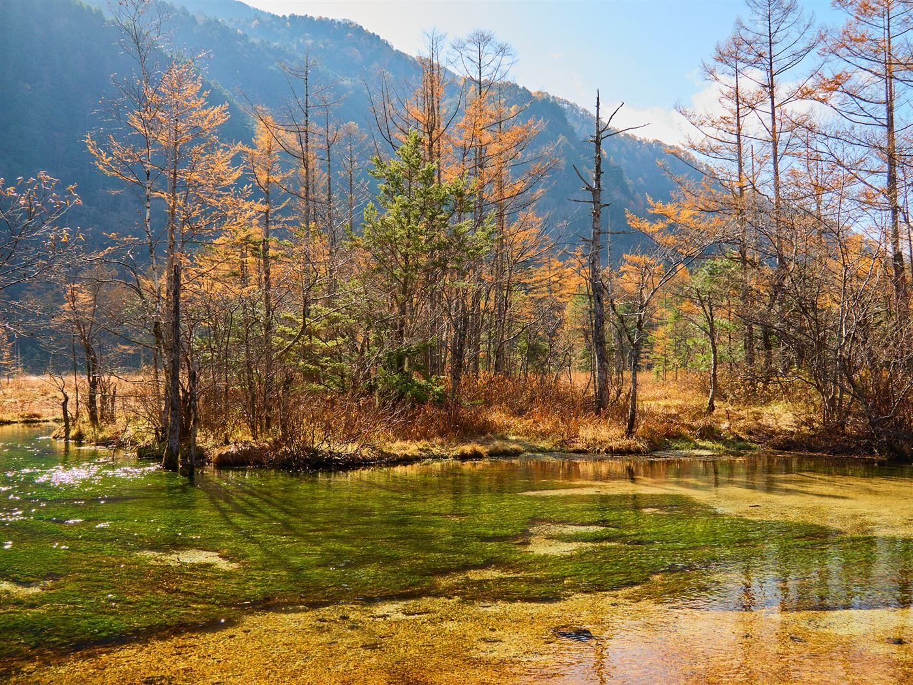
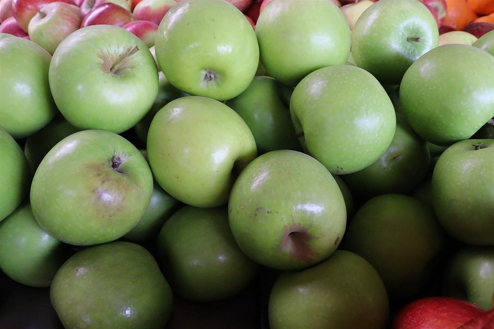

Access
アクセス
場所は、Googleマップでご確認ください。
〒399-0703長野県塩尻市広丘高出1935-6
| 所在地 | 〒399-0703 長野県塩尻市広丘高出1935-6 |
|---|---|
| 電話 | なし |
| 営業時間 | 準備中 |
| 定休日 | 準備中 |
| ご予約 | 準備中 |
| 駐車場 | 準備中 |
| SNS | Instagram @tokino.pan |
お店へのご連絡は、Instagramから。電話はありません。
Image
信州の秋を、想像して。


長野県の秋のイメージとして選んだ写真です。左は長野県内で撮影された記録のあるもので、店の周辺ではありません。右のりんごの写真は撮影地不明です。